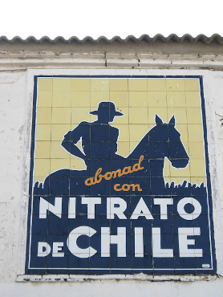

Si entenem la societat com un mirall de la seva classe dirigent, segur que arribem a la conclusió que el món és una merda. Però no una merda qualsevol, sinó una bona merda. Llevat de comptadíssimes excepcions, els que manen no ho fan pensant en el bé comú, doncs només es dediquen a vendre la seva ànima i sa mare al millor postor. Enganyen, roben i assassinen. L’engranatge que mou la roda està podrit però sembla molt difícil de trencar, ja que l’única emoció de conèixer un determinat successor és saber si només arribarà a ser tan lladre com l’anterior o aconseguirà superar-lo.
Però, passant molt més desapercebudes, hi ha un altre tipus de persones: els eriçons1. Coberts per un mantell de pues que els protegeix de la podridura externa, són éssers molt vàlids que senten un amor infinit cap a alguna cosa i que no estan gens interessats en corrompre’l. Són grans coneixedors d’un determinat tema que, no obstant això, es guanyen el pa en alguna cosa que no hi té res a veure.
L’altre dia vaig tenir la sort de presenciar la descoberta d’un d’ells. Els detalls no tenen cap importància i no els donaré per preservar la voluntat que sempre té un eriçó de seguir-ho sent. Només cal saber que era una persona amb una feina de les que anomenen poc qualificades, i que tenia un coneixement i un amor sorprenents sobre un cert camp cultural. En el moment en què em vaig creuar amb ell a la vida, s’estava despullant de la seva carcassa davant d’una altra persona socialment més reconeguda. Portaven anys creuant-se a la feina de forma casual, però fins a aquell moment no havia reunit la confiança necessària per sincerar-se d’aquella forma. Les seves paraules eren un autèntic raig de passió i saviesa sobre allò que tant li agrada.
Per què aquest eriçó no és ministre de Cultura? Per què no tenim un millor lloc en el món gràcies a ella i, al contrari, tenim un de pitjor per culpa d’una altra? Crec que la resposta és l’ambició. En general, les bones persones no tenen ambició. O potser és molt difícil deslligar-la de l’ego. Algú que estima alguna cosa, l’estima de veritat i es fon amb ella. Per contra, altres persones, menys sanes mentalment, tenen la necessitat de pujar, pujar i pujar. Tenir i tenir. Per desgràcia, també per a elles, només s’estimen a si mateixes. Per tant, com deia Pocho, els bons han de fer la feina de les formigues per poder canviar la societat. No hi ha altre remei.
Que lluny queda ara l’oficina! Aquí, entre la rutina dels últims 15 anys, et sents segur. Sents que hi has crescut i saps què fer-hi tothora. Quan allargar la mà per agafar la grapadora, quan fer passar dins el client preocupat pels seus estalvis. En quin moment sortir amb pit i estómag inflats a fumar una cigarreta, amb els ulls mig tancats de l’orgull de saber que res se t’escapa. Tot ho coneixes, no hi ha lloc a la sorpresa. Mentre dura el tabac, com deia Víctor Jara, la Vida es eterna a cada minuto. Però no d’amor, sinó de costum, seguretat i complaença.
Te recuerdo Amanda, de Víctor Jara.
Que maldestre se’t veu ara! Quins passos tan poc convençuts que fas. La teva dona, eterna companya, al costat. Intentes mostrar-te segur com sempre, però no és fàcil, un munt de coses et desconcerten. Alternes la mirada a la guia que portes oberta entre les mans amb ullades als edificis que hi ha al voltant. Et preguntes, què he de fer per a què la meva visita a Barcelona es consideri ben feta, per no haver fracassat com mai faig a la meva feina? Suposo que he de visitar això, això i això. És aquí? No, és un xic més enllà. Aquí, sí, aquí és. Trec la càmera. Foto a la placa del Museu Picasso. Ja està. Missió acomplerta. Per què sento que falta alguna cosa?
La camisa recorre de manera cenyida la corba de la felicitat que t’has guanyat amb els durs anys de treball. Els pantalons curts deixen veure les teves cames desertes als turmells de tants anys de mitjons de seda. No ho vols pensar però et passa com a tothom. Un cop tota aquesta roba queda fora, només queda una personeta indefensa que, com tots, no durarà per sempre. Que s’aferra al que és, quan, en realitat, no té el control de res. Una bona persona, però que no sap que ho és.
Diverses vegades s’ha dit que l’arma més perillosa de l’home és la paraula. En ple segle XXI, després de les bombes nuclears o les armes químiques, potser sigui una afirmació exagerada. No obstant això, no ho és tant si ens adonem que la paraula es troba en la base de la propagació dels prejudicis, aquells que acaben provocant que tu i jo pensem que pensem diferent, que som dos uns diferents de dos mons que no es toquen, incapacitats d’enfocar recíprocament la nostra empatia.
Des de la primera vegada que vaig parlar més de 5 minuts seguits amb un argentí, vaig convertir-me en un admirador de l’enginy que tenen en l’ús de la paraula. La seva rapidesa a l’hora d’assignar malnoms és sorprenent. Només cal ser ros per ser un Ruso, o moreno per ser un Turco. En la mateixa línia, qualsevol lleuger sobrepès ja el fa a un digne de ser un Gordo, encara que desviar-se del patró ideal per baix tampoc el salva i el converteix en un Flaco.
La majoria de vegades, aquesta lleugeresa lingüística és simplement graciosa. Però no ho és quan contribueix a perpetuar discriminacions. Recordo que em vaig quedar gelat quan vaig escoltar l’expressió Negro de alma i em van fer comprendre el seu significat. Certs personatges la utilitzen per referir-se a aquell que, tot i no ser negre, es comporta com a tal. Segons les seves idees preestablertes, és clar. És a dir, que roba, insulta o qualsevol altra floreta. A l’Argentina, per negro s’entén a qualsevol persona prou morena com per semblar descendent d’indígena i, en general, habitant d’una Villa. Si ens parem a pensar, l’expressió és d’una crueltat i injustícia enormes, ja que pre-jutja que la delinqüència ve arrelada genèticament al color de pell negre, tant que si qui la comet és un blanc el fet es converteix en alguna cosa fora del normal, que no va amb el seu ADN.
Per sort, aquest tipus de persones de llengua viperina són cada vegada més mal vistes per la societat i queden més retratades quan es deixen anar. Però, la veritat, és quelcom en què tots hem d’estar atents en major o menor mesura si no volem perpetuar injustícies. Jo mateix, en aquest paràgraf, he deixat sense possible defensa als escurçons.
A la entrades anteriors, hem repassat a grans trets la història comuna del nitrogen i l’ésser humà. Vam començar al moment en què van ser formalment presentats, a finals del segle XVIII, i vam veure com l’home no va tenir una molt bona primera impressió d’aquest gas. Al contrari, va assignar-li diversos malnoms com aer malignus o assot, en considerar-lo una mena d’assassí. No obstant això, poc després, el nitrogen va trobar un aliat en el químic Justus von Liebig, que va anunciar que aquest element tenia una gran importància per a la vida com a fertilitzant per als camps de cultiu. Precisament, en plena Revolució Industrial, els països desenvolupats tenien urgència en trobar aliment per als seus camps, ja que aquests no donaven més per a una població que havia crescut en nombre i s’havia mudat en massa a les ciutats. Aquesta desesperació va ser aprofitada pels àvids capitalistes, els quals van anar a la caça i captura dels nitrats, els compostos que contenen nitrogen que les plantes poden aprofitar. Primer el van trobar en els excrements de les aus del pacífic peruà i, poc més tard, en el salnitre del Desert d’Atacama, però en ambdós casos van passar per sobre i van assassinar a qui va fer falta per tal de comprar-se un barret millor que el del veí.
Ara bé, també vam dir que l’aire que respirem està format en un 78% per nitrogen. Llavors, per què tanta desesperació per trobar-lo i tanta bogeria desfermada al voltant seu, si constantment ens està envoltant? Resulta que, a l’atmosfera, cada àtom de nitrogen està unit a un altre amb un triple enllaç, és a dir, amb tres vegades més de força que un enllaç (covalent) comú. Per tant, resulta summament costós separar-los d’aquesta abraçada d’ós perquè formin els nitrats que poden assimilar les plantes.
El 1909, el químic alemany d’origen jueu Fritz Haber va ser el primer a aconseguir-ho a partir d’un mètode relativament econòmic. L’empresa BASF va comprar l’invent i li va assignar al també alemany Carl Bosch la tasca d’escalar-lo a un nivell de producció industrial, batejat com a procés Haber-Bosch. Gràcies a aquest, es va poder donar aliment a una densitat de població cada vegada més gran i Fritz Haber va ser recompensat amb el premi Nobel el 1918.
Fritz Haber.
No obstant això, el nitrat té una doble cara. D’una banda és una font de vida, però per una altra és un precursor en la fabricació d’explosius. De fet, el procés Haber-Bosch va ser culpable que la Primera Guerra Mundial es prolongués en el temps, ja que Alemanya el va utilitzar com a font d’explosius al mateix temps que els aliats es nodrien de les salitreras xilenes. Acabada la guerra, la majoria de mines van anar tancant en pocs anys a causa de la superioritat del procés industrial, convertint-se en paisatges fantasma i deixant una multitud de miners sense feina.
Si paradoxal és el nitrat, molt més ho és el personatge de Fritz Haber. Encara que el seu descobriment ha sustentat a la societat humana, la seva cara fosca provenia del fet de ser un fervent patriota alemany. A ell se li atribueix la frase: En temps de pau un científic pertany al món, però en temps de guerra pertany al seu país. Immers en la seva convicció, el 22 abril de 1915 Haber es trobava al front de guerra dirigint el primer atac reeixit a gran escala amb gasos químics de la història, llançant tones de clor sobre els soldats aliats. Dies després, la seva dona, la també Química Clara Immerwahr, se suïcidava d’un tret al cor, molts creuen que en part a causa de la repulsió que li produïen els fets provocats pel seu marit. El mateix matí de la mort de Clara, Fritz sortia cap al front de l’Est a llançar més clor i sembrar el pànic. Fritz Haber també va sintetitzar l’insecticida Zyklon A, una varietat del qual va ser més tard utilitzada a les cambres de gas dels camps de concentració nazis, matant a milions de persones entre les quals a membres de l’extensa família Haber.
A l’actualitat, el procés inventat per Fritz Haber segueix sent indispensable per mantenir la civilització humana tal com la coneixem. Però aquest tal com la coneixem no és el millor possible. Es calcula que un terç de la població mundial se sustenta pel procés Haber-Bosch, el qual utilitza un 5% del gas natural que es consumeix a tot el món. La distància abismal que per a moltes persones hi ha entre el que se serveix al plat i l’origen de l’aliment, porta a processos industrials com aquest per arrencar grans rendiments del sòl. El problema és que els fertilitzants són també agents molt contaminants. Quan plou sobre els camps de conreu, els nitrats queden dissolts en l’aigua que és drenada cap a llacs, rius o mars. La gran quantitat de nutrients que porten aquestes aigües provoca una reproducció exagerada d’algunes algues superficials, les quals consumeixen tot l’oxigen dissolt provocant la mort d’altres plantes i peixos, i creen una capa superficial impenetrable al sol (Eutrofització). A més, les molècules de nitrat es combinen amb l’oxigen atmosfèric donant lloc a substàncies que danyen l’ozó de l’atmosfera.
Molt bon vídeo de la BBC (en anglès) que explica la química del procés Haber-Bosch.
Poc van trigar els no gens fidels capitalistes en oblidar les seves abraçades amb el guano i iniciar un nou romanç. Aquest cop, l’afortunada s’anomenà salnitre, o nitrat de sodi, el qual els químics havien revelat com un fertilitzant excel·lent. No obstant això, no van haver de mudar-se molt lluny per anar a viure amb la nova xicota. Durant segles, el salnitre havia estat ignorat en el desert d’Atacama, el més sec del món, les inhòspites extensions del qual havien servit fins aleshores com a matalàs amortidor dels conflictes fronterers entre Perú, Xile i Bolívia. No és sorprenent, el nou tresor faria desaparèixer aquesta tranquil·litat.
L’extracció del salnitre va arribar fins a Antofagasta, en aquell temps província boliviana, però les mines eren de propietat xilena. Quan el govern bolivià va decidir apujar els impostos a les empreses que operaven en el seu sòl per sobre del que s’havia pactat, Xile va mobilitzar el seu exèrcit i va iniciar la Guerra del Pacífic (1879-1883) contra bolivians i també peruans. Nens i adults, exaltats pel nacionalisme i reclutats forçats, van lluitar i van matar-se els uns als altres. De forma simultània, la caiguda del valor de les salnitreres a causa de la guerra era aprofitada per empresaris britànics per convertir-se en els seus amos a un mínim cost.

Al voltant de 1925 van començar a aparèixer a Espanya i Portugal aquests rètols de rajoles esmaltades promocionant el Nitrat de Xile, com també és conegut el salnitre d’aquest país. Encara és possible trobar algun supervivent com aquest, fotografiat a Jaén per Felipe Sérvulo (CC by-nc-nd-2.5-es).
Finalitzada la guerra, Perú va perdre el sud del seu territori i Bolívia va perdre Antofagasta, la seva única sortida al mar, en mans de Xile. No obstant això, Bolívia no va saber el que realment havia perdut fins a principis del segle XIX. En aquest territori va ser descoberta la que durant molts anys va ser la més gran mina de coure del món i motor de l’economia xilena, Chuquicamata.
Dir que Xile va guanyar la guerra és una mentida si entenem Xile com les persones que l’habiten. Sí que ho van fer uns pocs d’ells i també un altre grapat d’anglesos. Contràriament, molts més xilens -i també peruans, bolivians o argentins- van tenir com a recompensa jornades laborals de 16 hores al mig del desert i en condicions d’esclavitud. Els miners eren controlats per una força policial privada i no eren pagats amb diners. Per contra, se’ls asalariaba amb unes fitxes que només tenien valor als comerços pertanyents a les mateixes companyies salnitreres. Quan al 1907 els treballadors es van unir i van demanar cobrar en diners, més seguretat o fundar escoles nocturnes, la força repressora de l’estat va preferir protegir els beneficis de les empreses angleses i va cosir a trets als obrers al seu lloc de reunió (una escola d’Iquique), provocant una brutal matança (es parla des de centenars a més de 3000).
Anys abans, José Manuel Balmaceda, president de Xile entre 1886 i 1891, havia intentat revertir la situació i acabar amb el monopoli de les empreses salnitreres. La intenció era que el poble també rebés algun benefici d’aquesta extracció. Veient amenaçada la seva posició de superioritat, els grups de pressió es van vestir, com tan bé saben, amb el vestit de titellaires i van moure els fils oportuns (fils i suborns) per a enfrontar al congrés contra el president. La guerra civil va esclatar i el poble va tornar a matar-se entre si, mentre Balmaceda, derrotat, acabava disparant-se un tir.
Pel·lícula sobre la guerra civil xilena centrada en José Manuel Balmaceda.
No obstant això, com veurem a la propera entrada, els amos de les mines no van poder fer res contra un sol químic alemany.